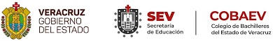

Colegio De Bachilleres Del Estado De Veracruz
¿Qué es el Cobaev?
El Colegio de Bachilleres del Estado de Veracruz es un organismo público descentralizado con personalidad jurídica y patrimonio propio, creado mediante Decreto expedido por el Ejecutivo Estatal del 30 de julio de 1988, mismo que se publicó en la gaceta oficial No. 99 de fecha 1° de agosto del mismo año.
El Cobaev proporciona servicios de bachillerato de calidad, propiciando el desarrollo integral del educando, con recursos didácticos y tecnologías modernas, a través de métodos que atiendan las características diferenciadas de los alumnos, y con docentes altamente capacitados que garanticen procesos de enseñanza-aprendizaje apropiados para vincularlos con la comunidad y el trabajo productivo y para integrarlos competitivamente a estudios de nivel superior.
¿Cómo puedo inscribirme en el Cobaev?
El registro para la evaluación diagnóstica en línea debe ser a través de la página http://aspirantes.cobaev.edu.mx/. La fecha límite para completar el registro para la evaluación diagnóstica en línea será el próximo 18 de junio del 2021.